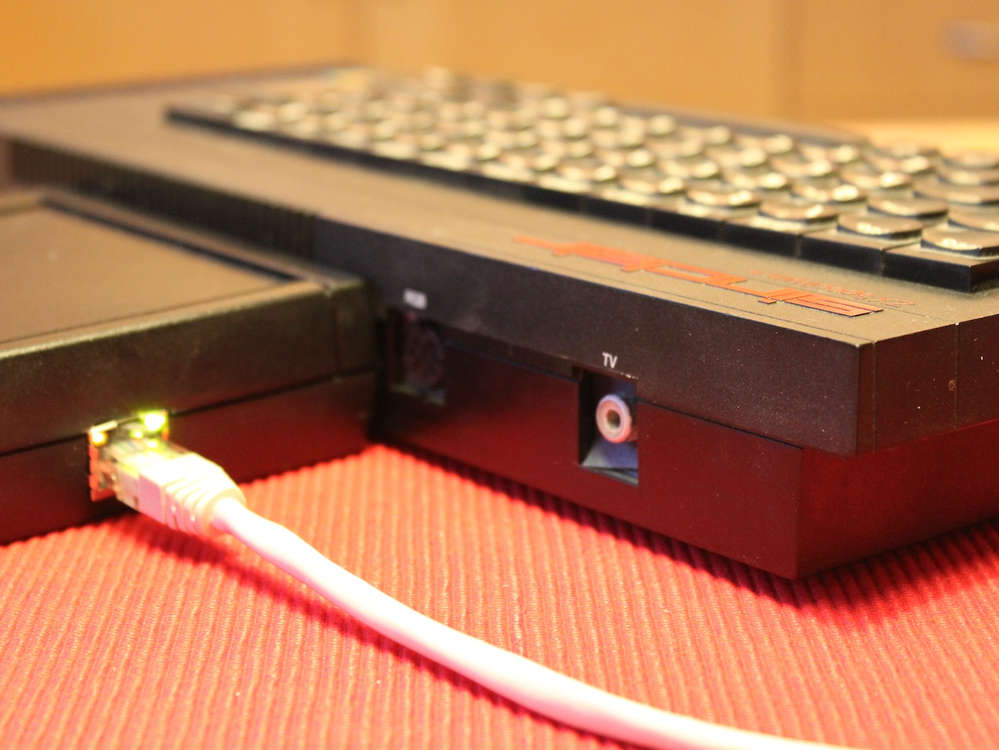
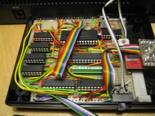
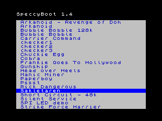

|  |
Old dog, new tricks
What if we could load any 48K Spectrum game into the real hardware in 15-20 seconds — over the local network? Diskless workstation have done this for years, and today lots of embedded development boards can also boot over a network. So why don't we do this on the Spectrum? Welcome to SpeccyBoot! SpeccyBoot is a combination of hardware and software. The hardware includes an Ethernet interface, and the software implements a minimalistic IP stack to perform a network (TFTP) boot. |
|  |
Build it yourself
The SpeccyBoot hardware device connects to the Spectrum's expansion port, and includes the following components:
The FRAM was chosen because it's easy to re-program. If you have the equipment, any old EPROM/EEPROM (16K or larger) should be fine. |
|  |
Casual retro-gaming
The boot software will load a secondary loader (menu application) from the TFTP server. The menu application, in turn, loads a .z80 snapshot directly into the Spectrum's RAM. The boot software is stored in the FRAM, which temporarily replaces the internal ROM during boot. |
If you're interested in this project, you should also check out Winston's Spectranet project to integrate the W5100 (Ethernet host with embedded on-chip TCP/IP stack) with the Spectrum.
This is my (Patrik Persson's) hobby project. I've been working on this in my spare time for a few months, so it's still early days. I'm happy with the progress rate, though, so stay tuned for updates.
| status | task |
|---|---|
| works | RFC906 (minus RARP, noone uses that these days) |
| works | IP, ARP, UDP, and TFTP for the above |
| works | DHCP/BOOTP client |
| works | ICMP for PING responses |
| working | .z80 snapshot loading |
| ongoing | Secondary loader (menu application loaded over TFTP) |
| June 4, 2009 | Booted from .z80 snapshot over Ethernet |
| May 9, 2009 | Loaded .z80 snapshot in emulated environment (not yet over real Ethernet) |
| April 26, 2009 | DHCP client, TFTP file transfer working |
| April 19, 2009 | The Speccy responds to PING (ICMP REPLY) |
| March 25, 2009 | Booting from FRAM works (Hungry Horace, cartridge version) |
| March 17, 2009 | Bit-banged SPI works (BASIC hack to flash activity/link LEDs) |
No releases of the software are available yet, but feel free to check out SVN:
svn co https://speccyboot.svn.sourceforge.net/svnroot/speccyboot/trunk speccyboot
The SourceForge page is here: https://sourceforge.net/projects/speccyboot/
The hardware design is available here, and you may use it freely. The drawing is quite rudimentary, and does not include power supply details (5V to most circuits, except the ENC28J60 which uses 3.3V). If you are interested in building a SpeccyBoot device, please contact me.
{kind=link}